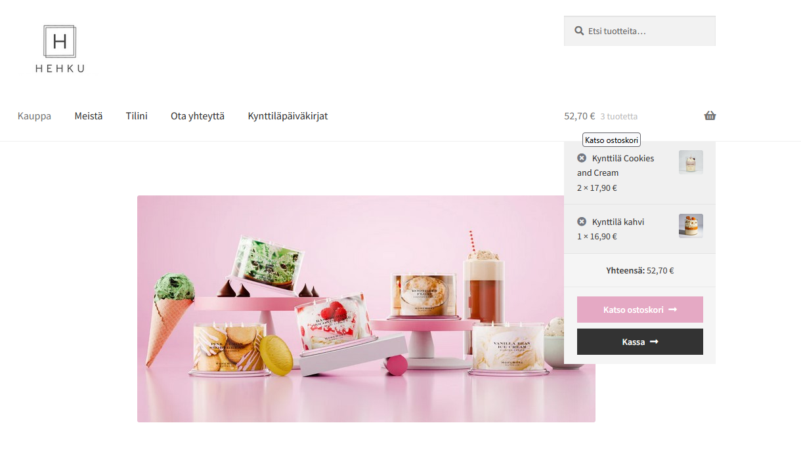

WordPress Website Project
In this project, I created a Finnish online store for handmade candles called HEHKU. The goal was to build a user-friendly and visually appealing website that serves customers interested in interior design and creating a cozy home atmosphere. The project was developed using the WordPress platform and the WooCommerce plugin to implement e-commerce functionality such as a shopping cart, payment methods, and inventory management.

The online store includes standard pages such as the homepage (shop), “About Us,” “My Account,” “Contact,” and a blog page featuring information about the candle-making process and new products. For the design, I chose the Storefront theme, which I customized by adding a logo, adjusting the color scheme, and translating the site into Finnish using the Loco Translate plugin. I also added additional features such as a live chat for customer support and a countdown timer for showcasing promotions. Forms were implemented using the WPForms plugin.
If you would like to review a more detailed report on the website development process, you can download it below. (Only in Finnish)
Download report (PDF){kind=link}